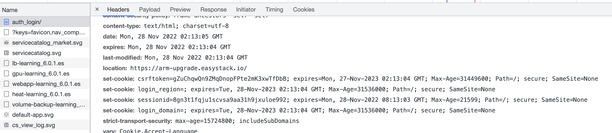
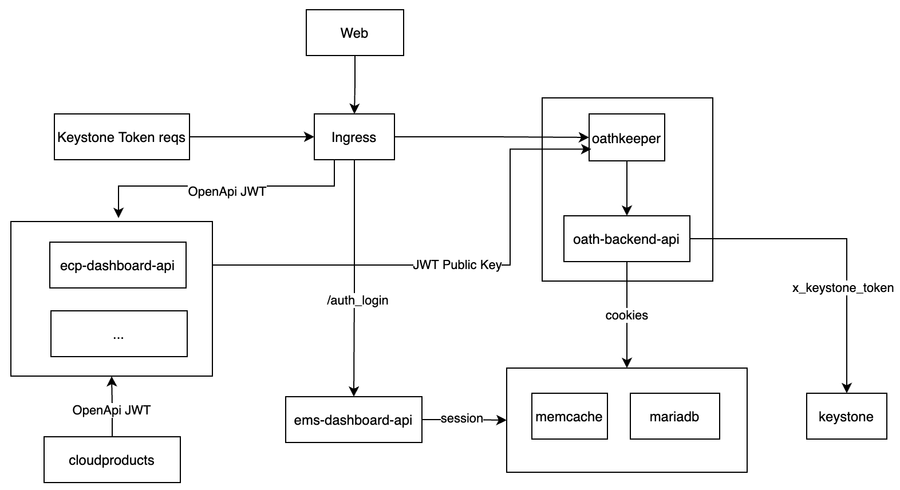
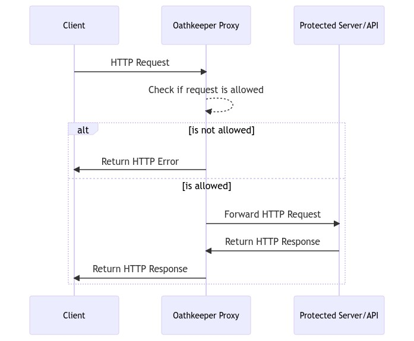
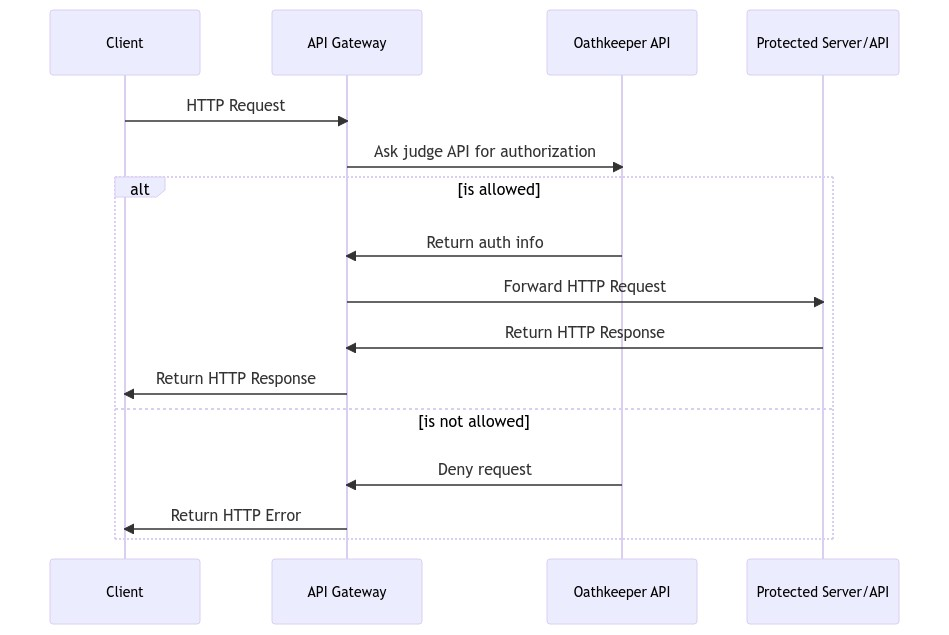
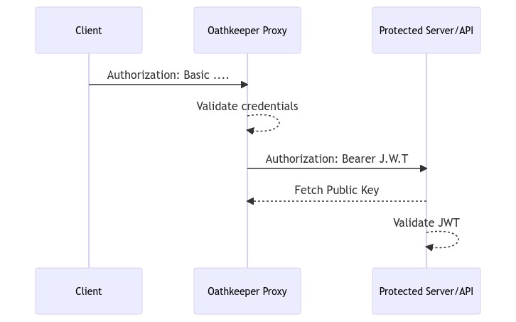

登陆和访问逻辑
目前网页端平台用户的登陆流程是，请求 ems_dashboard_api 服务的/ems_dashboard_api/auth_login/接口，返回 session_id cookies 数据，返回的响应头具体如下图：

后续网页端的请求，都是带上此 cookie 来进行访问的。对应我们平台来说，登陆和访问的访问控制涉及服务和流程如下：

Oathkeeper 介绍
Oathkeeper 对传入的 HTTP 请求进行授权，可以成为架构中的决策执行点，即在你的上游 API 或 Web 服务器前的反向代理，拒绝未经授权的请求，
并将授权的请求转发到你的服务器。如果你想使用另其它 API 网关（Kong、Nginx、Envoy、AWS API 网关。…..），Oathkeeper 也可以插入其中并作为其决策决定点。
反向代理模式
如果请求被允许，暴露反向代理的端口会将请求转发到规则中定义的上游服务器。
如果请求不被允许，Oathkeeper 不会转发请求，而是返回一个错误信息。流程图如下所示：

访问控制决策模式
Oathkeeper 访问控制决策 API 遵循最佳实践，可与大多数现代 API 网关和反向代理一起使用。流程图如下所示：

认证规则说明
以我们现在的 oathkeeper 配置为例，config.yaml 配置为：
1
2
3
4
5
6
7
8
9
10
11
12
13
14
15
16
17
18
19
20
21
22
23
24
25
26
27
28
29
30
31
32
33
34
35
36
37
38
39
40
41
42
43
44
45
46
47
48
49
50
51
|
serve:
proxy:
port: 4455 # run the proxy at port 4455
api:
port: 4456 # run the api at port 4456
access_rules:
repositories:
- file:///rules.json
errors:
fallback:
- json
handlers:
json:
enabled: true
config:
verbose: true
mutators:
noop:
enabled: true
id_token:
enabled: true
config:
issuer_url: oath-gateway.{{ .Release.Namespace }}
jwks_url: file:///jwks/jwks.json
ttl: 60s
claims: |
{{ `{{ toJson .Extra }}` }}
authorizers:
allow:
enabled: true
authenticators:
bearer_token:
enabled: true
config:
check_session_url: http://127.0.0.1/api/v1/auth/keystone/
preserve_path: true
token_from:
header: x-keystone-token
cookie_session:
enabled: true
config:
check_session_url: http://127.0.0.1/api/v1/auth/session/
preserve_path: true // 是否保留路径，设置后，check_session_url 的路径将会被保留，而不是替换为将要被检查的路径
only:
- sessionid // cookie 中至少有 sessionid 字段才会处理，否则将会传递到后续认证处理器
|
认证规则 rules.json 为：
1
2
3
4
5
6
7
8
9
10
11
12
13
14
15
16
17
18
19
20
21
22
23
24
25
26
27
28
|
[
{
"id": "cloud-product-auth", // 这条规则的 id
"version": "v0.36.0-beta.4",
"match": {
"url": "http://<.*>/<.*>", // 匹配所有 url
"methods": [
"GET", "POST", "PUT", "DELETE", "PATCH", "OPTIONS" // 接口类型
]
},
"authenticators": [ // 认证，设置了两个认证处理器
{
"handler": "bearer_token"
},
{
"handler": "cookie_session"
}
],
"authorizer": {
"handler": "allow"
},
"mutators": [
{
"handler": "id_token"
}
]
}
]
|
authenticators 处理器
authenticators 是配置认证处理器，会根据顺序依次认证，如果第一个通过了，后面的将会被忽略，更详细介绍参考 认证处理器说明。
认证的处理器有以下这些类型：
- noop：这不会执行任何授权，不会颁发任何凭据，是一个通用性处理器，允许所有请求转发到上游的 url
- unauthorized：以未授权来拒绝所有请求
- anonymous：会检查是否设置了“Authorization” header 头，如果没有设置，将会设置 subject 名称为“anonymous”，可在 oathkeeper.yml 中配置。
- cookie_session：将会转发请求方法、请求路径、请求头到一个 session 存储，如果返回了 200 和 body，处理器将会正确设置 subject，使用的是 cookie 里面的数据。
- bearer_token：会转发请求方法、请求路径、请求头到一个 session 存储，如果返回了 200 和 body，处理器将会正确设置 subject。
- oauth2_client_credentials： 使用 HTTP Basic Authorization 中的用户名和密码，执行 OAuth 2.0 的客户端证书授权来校验是否有效。
- jwt：接受带有 Bearer Token 授权 header 的请求。
- oauth2_introspection
- jwt Scope
以 bearer_token 为例子，说明下一个认证处理器，具体需要哪些配置，oathkeeper.yml 配置示例：
1
2
3
4
5
6
7
8
9
10
11
12
13
|
authenticators:
bearer_token:
enabled: true # 是否使用 bearer_token
config:
check_session_url: https://session-store-host // 后端 session 存储地址
preserve_path: true
token_from:
header: Custom-Authorization-Header // 从 header 获取
# or
# query_parameter: auth-token // 从查询参数获取
# or
# cookie: auth-tokens // 从 cookie 字段获取
|
rules.json 示例为：
1
2
3
4
5
6
7
8
9
10
11
12
13
14
15
16
17
|
[{
"id": "some-id",
"upstream": {
"url": "http://my-backend-service"
},
"match": {
"url": "http://my-app/some-route",
"methods": [
"GET"
]
},
"authenticators": [{
"handler": "bearer_token"
}],
"authorizer": { "handler": "allow" },
"mutators": [{ "handler": "noop" }]
}]
|
authorizer 处理器
authorizer 是配置授权处理器，将会尝试从之前验证过的凭据中对请求的主体（即用户）授权。比如，你可以检查请求主体是否在“admin”用户组，或者他是否有权限执行此操作，更详细介绍参考 授权处理器说明。
授权处理器会复制请求主体的许可操作，oathkeeper 支持不同类型的授权处理器，并且会根据需要不断增加处理器种类。授权处理器保证主体，比如用户，有必要的权限访问或者操作某个服务。授权处理器和访问规则有 1:1 的强制关系，每个访问规则不可能有两个授权处理器。授权处理器有两个字段：
1
2
3
4
5
6
|
{
"authorizer": {
"handler": "noop", // 处理器名称
"config": {} // 配置
}
}
|
授权处理器有以下类型：
- allow：允许所有操作。
- deny： 认为所有操作都是未授权的。
- keto_engine_acp_ory：使用 Ory Keto API 来进行访问控制，即“Ory 风格”的访问控制策略。
- remote：使用一个远程的授权处理器，执行一个 HTTP POST 请求并带上原始的 body 内容到远端，假如远端返回 200，则访问被允许。
- remote_json：跟 remote 类似，只是请求 body 为 json 格式。
mutators 处理器
mutators 是转换处理器，用来在转发请求之前进转换。一个常见用法是生成一组新的凭据（例如 JWT），然后会被转发到上游服务器。当使用 oathkeeper 的决策 API，它期望 API Gateway 转发经过转换的 HTTP 头到上游服务器，更详细介绍参考 转换处理器说明。
比如有这样一个场景，请求包含“Authorization: basic”的请求头，但是上游服务器只能处理“X-User: ”请求头，就需要一个转换处理器，这样上游服务器就不用关心原始请求的凭据类型了。转换处理器有以下类型：
- noop：不做转换，只简单的转发请求头。
- id_token：使用认证的信息（比如主体），转换为一个签名的 JWT，更具体的来说是转换为 OpenID Connect ID Token，你的后端可以从 jwks.json（由 oathkeeper API 生成）端点获取 key 来校验 token。
- header：转换请求头，允许你通过 header 传递凭据到上游服务器，比如“Authorization: basic”转换为“X-User: ”。
- cookie：转换请求 cookie，允许你通过 cookie 传递凭据到上游服务器。
- hydrator：从外部 API 获取额外的数据，可以被其他处理器使用。
- cache：支持缓存的转换处理器。
因为上面用到了 id_token，这里做下详细介绍。假设一个请求是由 oathkeeper 使用 Basic 授权保护的资源发出的：
1
2
3
|
GET /api/resource HTTP/1.1
Host: www.example.com
Authorization: Basic Zm9vOmJhcg==
|
假设 oathkeeper 正在授权访问请求，Basic Zm9vOmJhcg==将被替换为加密的签名 jwt：
1
2
3
|
GET /api/resource HTTP/1.1
Host: internal-api-endpoint-dns
Authorization: Bearer <jwt-signed-id-token>
|
保护的资源通过使用 oathkeeper 提供的公钥，就能解码和验证 JWT。用来解码 ID token 的公钥，在 oathkeeper 的/.well-known/jwks.json端点中可用。
1
|
http://oathkeeper:4456/.well-known/jwks.json
|
流程图如下：

如果oauth2_client_credentials认证处理器成功认证了凭据client-id:client-secret，那转换处理器将会创建一个 JWT 的 ID Token，带有以下的示例性说明：
1
2
3
4
5
6
7
8
|
{
"iss": "https://server.example.com",
"sub": "client-id",
"aud": "s6BhdRkqt3",
"jti": "n-0S6_WzA2Mj",
"exp": 1311281970,
"iat": 1311280970
}
|
JWT 声明如下：
- iss：响应的签发者标识，一般是 oathkeeper 的 url，即
https://oathkeeper.myapi.com。
- sub：主体标识，终端用户在签发者内部唯一的标识符。
- aud：令牌的受众。
- exp：过期时间。
- iat：JWT 发布的时间。
- jti：一个加密的强随机的标识符，来确保 JWT 的唯一性。
id_token 在 oathkeeper.yml 中配置示例：
1
2
3
4
5
6
7
8
9
10
11
|
mutators:
id_token:
enabled: true // 是否开启
config:
issuer_url: https://my-oathkeeper/ // 签发者地址
jwks_url: https://fetch-keys/from/this/location.json // 公钥获取地址设置为远端地址
# jwks_url: file:///from/this/absolute/location.json // 公钥获取地址设置为本地文件系统路径
# jwks_url: file://../from/this/relative/location.json // 相对地址
ttl: 60s // 超时时间
// claims 允许定制 JWT 的某些字段值
claims: '{"aud": ["https://my-backend-service/some/endpoint"],"def": "{{ print .Extra.some.arbitrary.data }}"}'
|
在mutators.id_token.jwks_url定义的 JWT 集合中中发现的第一个私钥，将会被用来签署 JWT：
- 假如第一个 key 是对称算法密钥（HS256），将会被使用，但是不会被传播到
/.well-known/jwks.json中，必须手动配置上有能够获取这个密钥。
- 加入第一个 key 是非对称私钥（例如 RS256、ES256），将会被使用，对应的公钥将会被广播到
/.well-known/jwks.json中。
在 rules.json 中配置示例为：
1
2
3
4
5
6
7
8
9
10
11
12
13
14
15
16
|
cat ./rules.json
{
...
"mutators": [
{
"handler": "id_token",
"config": {
"aud": [
"audience-1",
"audience-2"
],
"claims": "{\"abc\": \"{{ print .Subject }}\",\"def\": \"{{ print .Extra.some.arbitrary.data }}\"}"
}
}
]
}
|
errors 处理器
错误处理器会在前面几种处理器失败情况下执行，定义了如何错误情况，比如在用户未授权情况下重定向到登录 url，如果不指定，默认是以 json 方式返回响应。
错误处理器支持全局设置和单条访问规则设置，oathkeeper 将会首先检查访问规则级别的错误处理器，然后才会返回全局设置的错误处理器。
一个示例 oathkeeper.yaml 如下：
1
2
3
4
5
6
7
8
9
10
11
12
13
14
|
errors:
fallback: // 设置后备，在有多个 handler 都满足转发条件时，优先使用后备字段里面的处理器。
- json
handlers:
json:
enabled: true # 默认为 true
# config:
# when: ...
redirect:
enabled: true # 默认为 false
config:
to: http://mywebsite/login
# when: ...
|
使用说明
安装：
1
2
|
docker pull oryd/oathkeeper:v0.40.0
docker run --rm -it oryd/oathkeeper:v0.40.0 help
|
如何生成 jwk 文件：
1
|
oathkeeper credentials generate --alg ES256 > /jwks/jwks.jso
|
流程分析
首先看下 oath-gateway deployment 配置：
1
2
3
4
5
6
7
8
9
10
11
12
13
14
15
16
17
18
19
20
21
22
23
24
25
26
27
28
29
30
31
32
33
34
35
36
37
38
39
40
41
42
43
44
45
46
47
48
49
50
51
52
53
54
55
56
57
58
59
60
61
62
63
64
65
66
67
68
69
70
71
72
73
74
75
76
77
78
79
80
81
82
83
84
85
86
87
88
89
90
91
92
93
|
{{- $envAll := . }}
---
apiVersion: apps/v1
kind: Deployment
metadata:
name: oath-gateway
spec:
selector:
matchLabels:
app: oath
component: gateway
replicas: 1
template:
metadata:
labels:
app: oath
component: gateway
spec:
initContainers:
- name: generate-jwks // init 容器，使用 oathkeeper api 生成非对称密钥
image: ...
command:
- /bin/sh
- -c
- "oathkeeper credentials generate --alg ES256 > /jwks/jwks.json"
volumeMounts: // empty 卷，共享文件
- name: oathkeeper-jwks
mountPath: /jwks
containers:
- name: oathkeeper // oathkeeper 服务
image: ...
args:
- serve
- '--config'
- /config.yaml
ports:
- containerPort: 4456
name: gateway
protocol: TCP
livenessProbe:
httpGet:
path: /health/alive
port: gateway
startupProbe:
httpGet:
path: /health/ready
port: gateway
failureThreshold: 30
periodSeconds: 10
volumeMounts:
- name: oathkeeper-jwks // 密钥
mountPath: /jwks
- name: oathkeeper-etc // 服务配置
mountPath: /config.yaml
subPath: config.yaml
readOnly: true
- name: oathkeeper-etc // 访问规则配置
mountPath: /rules.json
subPath: rules.json
readOnly: true
- name: oath-backend
image: "xxx"
args:
- -c
- gunicorn_conf.py
- wsgi:application
ports:
- name: oath-api
containerPort: 80
protocol: TCP
env:
- name: OATH_BACKEND_DB_NAME
value: django
- name: OATH_BACKEND_DB_USER
value: django
- name: OATH_BACKEND_DB_PASSWD
value: password
- name: OATH_BACKEND_DB_HOST
value: mariadb.openstack.svc.cluster.local
- name: DRONE_PASSWORD
value: EyBTaXnK
- name: OPENSTACK_KEYSTONE_URL
value: http://keystone-api.openstack.svc.cluster.local:80/v3
volumes:
- name: oathkeeper-jwks
emptyDir: {}
- name: oathkeeper-etc
configMap:
defaultMode: 420
name: oathkeeper-etc
|
在服务的描述中涉及 3 个容器：
- generate-jwks：init 容器，使用 oathkeeper 命令生成密钥
- oathkeeper：对外的 api 服务，对 http 进行认证、授权、转换的服务
- oath-backend： 认证处理器中请求的 session 后端服务，用来验证 bearer_token 和 cookie_session 处理器传过来的认证信息
从 config.yaml 配置可以看到，请求的 oath-backend 两个接口为：/api/v1/auth/keystone/和/api/v1/auth/session/，从代码可以知道两个接口逻辑为：
- /api/v1/auth/keystone/：从 x-keystone-token 请求头拿到 token，请求 keystone-api 获取数据，构造特定结构的 body 返回
- /api/v1/auth/session/：从 cookie 里面获取 session_id，然后从 mariadb 中获取 session_id 对应的数据
最终两个接口都会返回以下格式的 json 数据，经过转换处理器转换为 jwt 格式的认证字符串。
1
2
3
4
5
6
7
8
9
10
11
12
13
14
15
16
17
18
19
|
{
"subject": "",
"extra":{
"domain_id": "",
"domain_name": "",
"domain_token": "",
"email": "",
"id": "",
"name": "",
"project_id": "",
"project_name": "",
"project_token": "",
"roles": "",
"region_url": "",
"current_cloud": "",
"sp_id": "",
"sp_auth_url": ""
}
}
|
在业务代码中，请求的公钥地址为：“http://oath-gateway/.well-known/jwks.json”，即请求 oathkeeper 来获取公钥的。
参考
 times read
times read